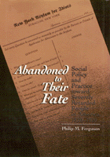

19th-century treatment of severely mentally disabled people raises important questions for today's policy makers
19th-century treatment of severely mentally disabled people raises important questions for today's policy makers


 19th-century treatment of severely mentally disabled people raises important questions for today's policy makers
19th-century treatment of severely mentally disabled people raises important questions for today's policy makers

|  |
Abandoned to Their FateSocial Policy and Practice Toward Severely Retarded People in America, 1820-1920Philip M. Fergusoncloth EAN: 978-1-56639-154-2 (ISBN: 1-56639-154-7) |
"This is a very good book that will reward the reader with thoughtful insights and comparative analysis about the fate of inmates, asylums, and reform in the United States."
—The Journal of American History
Covering a 100-year period in the history of the social policy and practice toward people with severe mental retardation, Abandoned to Their Fate looks at the lives of people once labeled "idiots," "hopeless," or "unteachable." Ferguson examines what he terms "chronicity," the definition of some of the disabled population as beyond successful treatment or training that would make them suitable for reentry into daily life.
The government, physicians, and families faced the quandary of what to do with people categorized as "feebleminded." Those who failed to respond to education or treatment were institutionalized, kept isolated except for contact with others like themselves, and simply left to a fate of neglect and exclusion. This book centers on a typical facility in New York. The Rome State Custodial Asylum for Unteachable Idiots (later the Rome Developmental Center) adopted a system of "custodialism" that is representative of the pattern of care provided by most American institutions in the nineteenth and early twentieth centuries. Many of the treatments lauded in the supposed "golden age" of progressive reform are challenged by Ferguson as popular myths.
Even with the passage of the Americans with Disabilities Act and the federal policy of deinstitutionalization, Ferguson contends that the lives of many disabled people, particularly those with severe or multiple disabilities, have not significantly improved. Concluding that for most people in the United States reform has yet to arrive, he draws clear connections between the policy and reform initiatives of the past and present.
"An insightful and well-written history of the institutions for people labeled as mentally retarded in the nineteenth and early twentieth centuries."
—Richard K. Scotch, The University of Texas at Dallas
Acknowledgments
Introduction
1. Abandonment and Chronicity
2. The Legacy of the Almshouse
3. The Rise of the Idiot Asylums, 1850-1890
4. Policy and Productivity in Rome's Early Years
5. Institutional Innovation and the Uses of Failure
6. Profiles of Chronicity
7. The History of Severe Retardation and the Future of Chronicity
Appendix: Admission Forms to the Rome and Syracuse Asylums
Notes
Bibliography
Index
Philip M. Ferguson is Assistant Professor and Research Associate, Division of Special Education and Rehabilitation, College of Education, the University of Oregon, and co-editor (with Dianne L. Ferguson and Steven J. Taylor) of Interpreting Disability: A Qualitative Reader.
Health and Health Policy
American Studies
Health, Society, and Policy, edited by Sheryl Ruzek and Irving Kenneth Zola.
No longer active.
Health, Society and Policy, edited by Sheryl Ruzek and Irving Kenneth Zola, takes a critical stance with regard to health policy and medical practice, ranging broadly in subject matter. Backlist titles include books on the legal and professional status of midwifery, the experience and regulation of kidney transplants, the evolution of federal law on architectural access, and a political/ethical argument for making the community responsible for universal access to health care.
© 2015 Temple University. All Rights Reserved. This page: http://www.temple.edu/tempress/titles/816_reg.html.